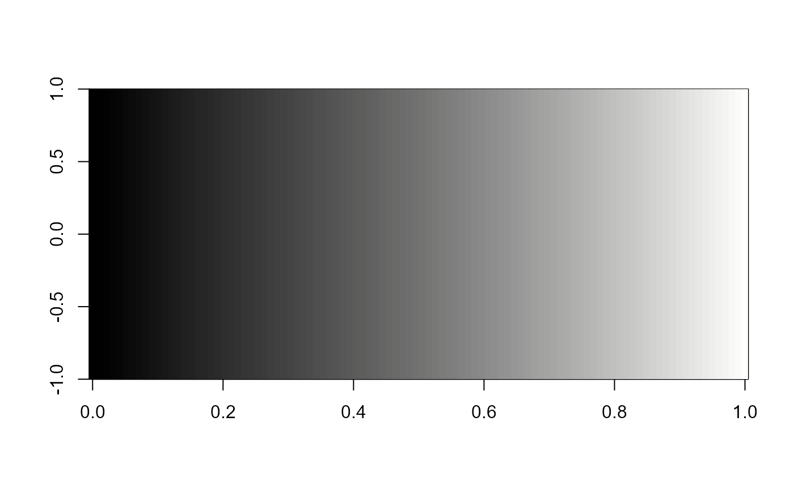
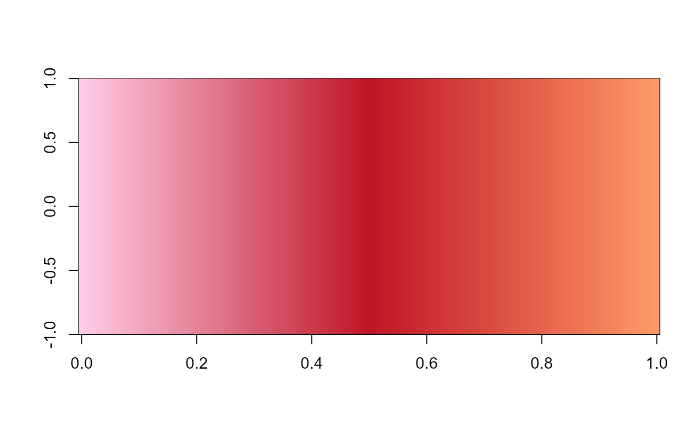
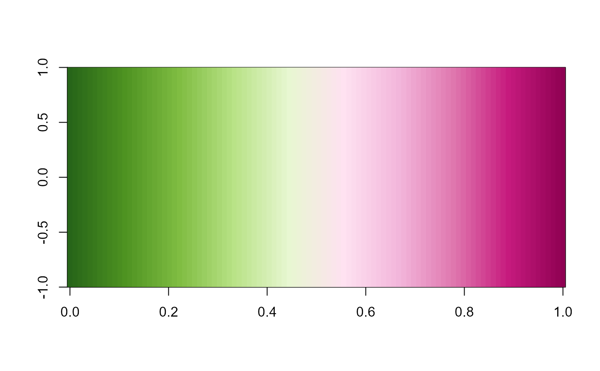
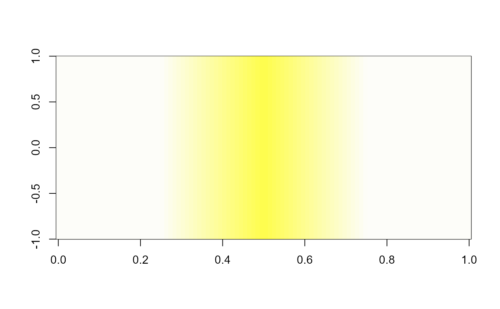

Picks one of the 7140 colour gradients at random and returns it, optionally printing its name so you can re-use it later. Based on Google's "I'm Feeling Lucky" button.
lucky(
n = 100,
colorRampPalette = FALSE,
rev = FALSE,
message = TRUE,
nseed,
frgb = rep(1, 3)
)Integer. Number of colours to return when
colorRampPalette = FALSE. Ignored when
colorRampPalette = TRUE.
Logical. If FALSE (default), returns a
character vector of n colours. If TRUE, returns a
colorRampPalette function — the right choice for
plot and ggplot2.
Logical. If TRUE, reverse the gradient order.
Logical. If TRUE (default), prints the name and
index of the chosen palette to the console.
Integer. A seed value passed to set.seed for
reproducible random selection.
Numeric vector of length 3. Per-channel scaling factors for
c(red, green, blue). Default c(1, 1, 1).
A character vector of hex colours when
colorRampPalette = FALSE, or a colorRampPalette function
when colorRampPalette = TRUE.
library(cptcity)
# Random palette each time you call it
image(matrix(1:100), col = lucky())
#> Colour gradient: cmocean_gray, number: 577

image(matrix(1:100), col = lucky())
#> Colour gradient: nd_vermillion_Analogous_08, number: 5957

image(matrix(1:100), col = lucky(rev = TRUE))
#> Colour gradient: jjg_polarity_PiYG, number: 4289

# Reproducible random pick
image(matrix(1:100), col = lucky(nseed = 42))
#> Colour gradient: pj_1_fe2, number: 6532

image(matrix(1:100), col = lucky(nseed = 42)) # same palette
#> Colour gradient: pj_1_fe2, number: 6532
# Silent mode + sf-compatible output
if (FALSE) { # \dontrun{
library(sf)
nc <- st_read(system.file("shape/nc.shp", package = "sf"))
plot(nc["AREA"], pal = lucky(colorRampPalette = TRUE, message = FALSE))
} # }